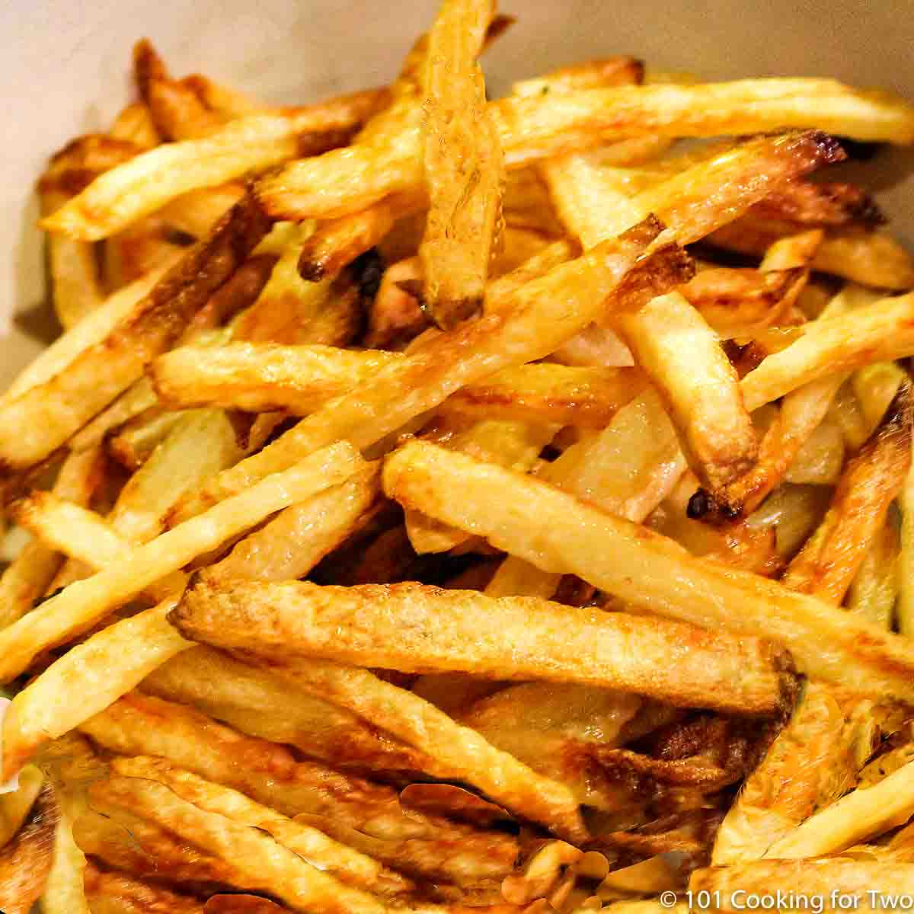

Oven baked fries

one of the most popular food items in the world made without a frier
french fries while delicious can be annoying to make at home unless you own your own frier you probably get
very soft and mushy fries well this recipe can help you with that
Ingredients
Steps
- wash and peel your potatoes
- cut the potatoes into half inch thick chunks
- coat in peanut oil
- place into oven at 400 degrees
- wait 10 minutes then flip the fries
- wait another 10 then take the fries out